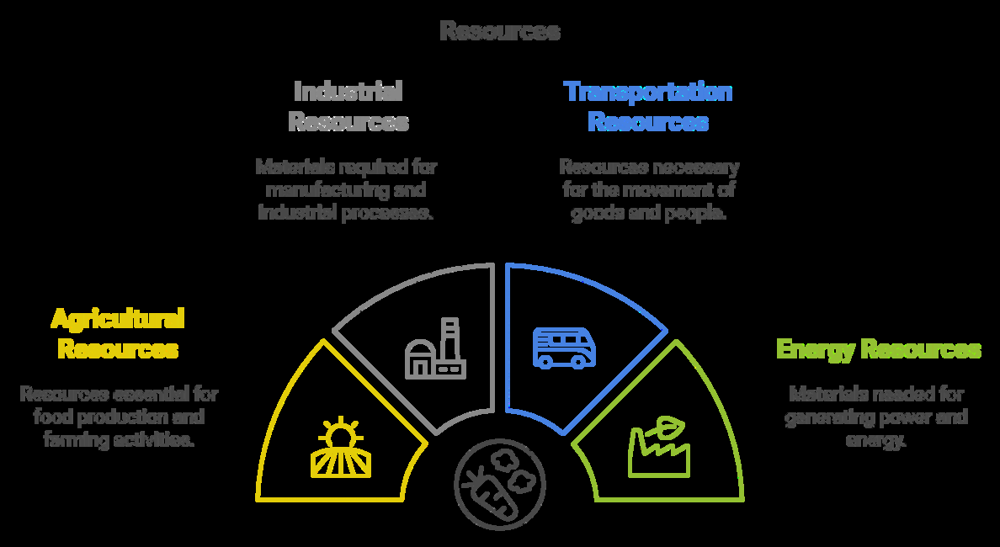
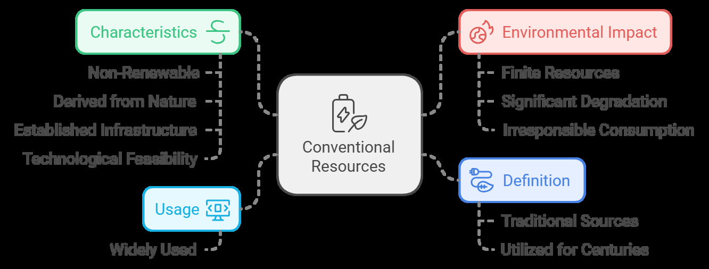
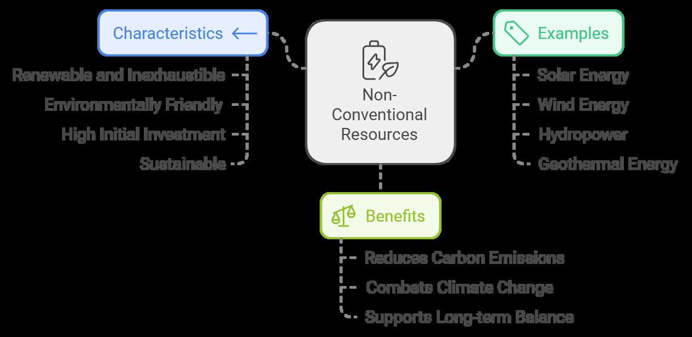

22 Conventional And Non Conventional Resources
Conventional and Non-Conventional Resources
Introduction
Resources are materials naturally present in the environment that are essential for the survival and development of living organisms.
They provide the foundational raw materials necessary for various human activities, including agriculture, industry, transportation, and energy production.
These resources are critical for supporting life and fostering economic development.

Based on their origin and usability, resources can be categorized into two major types: Conventional Resources and Non-Conventional Resources.
Conventional Resources
Conventional resources refer to the traditional sources of energy and raw materials that have been utilized by humans for centuries.
These resources are primarily non-renewable and are derived directly from nature. They are widely used because of their established infrastructure and technological feasibility.
However, they are finite and can cause significant environmental degradation when consumed irresponsibly.
Characteristics of Conventional Resources

Examples of Conventional Resources
Coal:
Used for generating electricity, powering industries, and running steam engines. Contributes significantly to air pollution and greenhouse gas emissions.
Petroleum:
Known as crude oil, it is refined into various products such as petrol, diesel, kerosene, and cooking gas.
Widely used in transportation, heating, and industrial operations. Found deep underground or beneath ocean floors.
Natural Gas:
A cleaner alternative to coal and petroleum, natural gas burns efficiently and emits less pollution.
Used as Compressed Natural Gas (CNG) in vehicles and for generating electricity.
Nuclear Energy
Derived from radioactive materials like uranium and thorium. Involves nuclear reactions that release heat energy, which is then used to produce electricity. While highly efficient, it carries risks of radioactive contamination and waste disposal issues.
Non-Conventional Resources

Examples of Non-Conventional Resources
Solar Energy
Derived from the sun's radiation and converted into electricity or heat using solar panels or photovoltaic cells.
Applications include solar water heaters, solar cookers, and large-scale solar power plants.
Abundant, renewable, and entirely pollution-free.
Wind Energy
Generated by harnessing the kinetic energy of wind through turbines. Wind farms, located in areas with high wind speeds, are used to produce electricity. A clean and sustainable energy source, though installation costs can be high.
Hydropower
Energy is generated from the movement of water, typically from rivers or dams. Used to produce electricity through hydroelectric power plants. Reliable and efficient but may impact ecosystems and displace communities.
Biogas
A renewable source of energy is produced through the anaerobic decomposition of organic waste, such as animal dung and plant residues.
Widely used in rural areas for cooking and heating purposes. Reduces waste and greenhouse gas emissions.
Geothermal Energy
Utilizes heat from beneath the Earth’s surface to generate electricity and provide direct heating.
A consistent and renewable energy source, though limited to geologically active regions.
Tidal Energy
Generated by capturing the energy of ocean tides using turbines. Suitable for coastal areas with high tidal ranges. Renewable and predictable but expensive to harness.
Conventional vs. Non-Conventional Resources
| Indicator | Conventional Resources | Non-Conventional Resources |
|---|---|---|
| Defni ition | Traditional energy sources like coal, oil, and gas. | Modern, eco-friendly options like solar and wind energy. |
| Renewability | Non-renewable; takes millions of years to form. | Renewable; replenishes naturally and won’t run out. |
| Availability | Limited and found in specifci regions. | Abundant and available globally. |
| Examples | Coal, petroleum, natural gas, nuclear energy. | Solar, wind, hydropower, geothermal, biogas. |
| Environmental Impact | High pollution and greenhouse gas emissions. | Clean energy with little to no pollution. |
| Sustainability | Unsustainable due to depletion and damage to nature. | Highly sustainable for long-term use. |
| Energy Efcfiiency | Moderate; energy loss during production. | High; efcfiient energy conversion. |
|---|---|---|
| Carbon Emissions | A signifciant contributor to global warming. | Minimal or zero emissions. |
| Technology | Uses old, well-established tech. | Relies on advanced, evolving tech. |
| Examples of Use | Power plants, vehicles, industries. | Homes, industries, rural energy, clean electricity. |